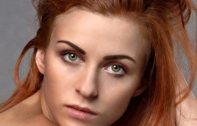
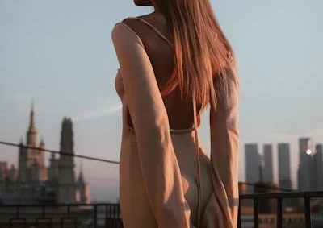
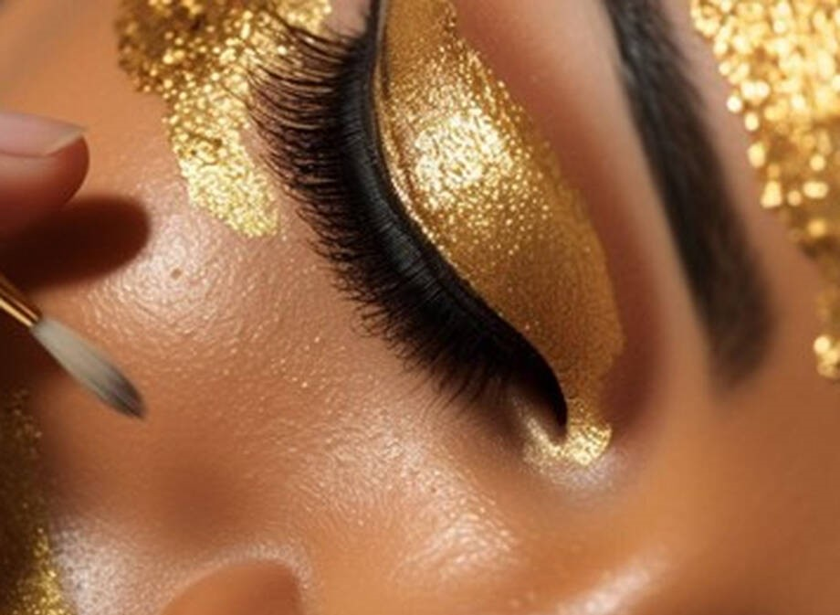

Clean Makeup Look: El Maquillaje Natural Que Arrasa

es una técnica de maquillaje que busca un acabado natural y fresco, como si no llevaras nada de maquillaje. Se trata de realzar la belleza natural del rostro utilizando productos ligeros que unifiquen el tono, corrijan imperfecciones de forma sutil y aporten un toque de color saludable.
maquillaje para un vestido fucsia

Si tienes un vestido fucsia y te enfrentas a maquillarte, es normal que te hagas mil preguntas…
Es probable que quieras saber cómo maquillarte para complementar su vibrante color. Ya sea que estés buscando un look de maquillaje de rostro de día o de noche, hay muchas opciones que pueden destacar tu belleza y hacer que te sientas segura.
Maquillaje dorado: resalta tu belleza de día y de noche

Desde un maquillaje dorado de día, con un estilo cotidiano, natural y sofisticado, hasta uno de noche vibrante y glamuroso. Puedes elegir tonos suaves y brillantes para agregarle a tu rostro una apariencia natural durante el día o acentuarlo con detalles metálicos para una apariencia más atrevida y brillante por la noche.